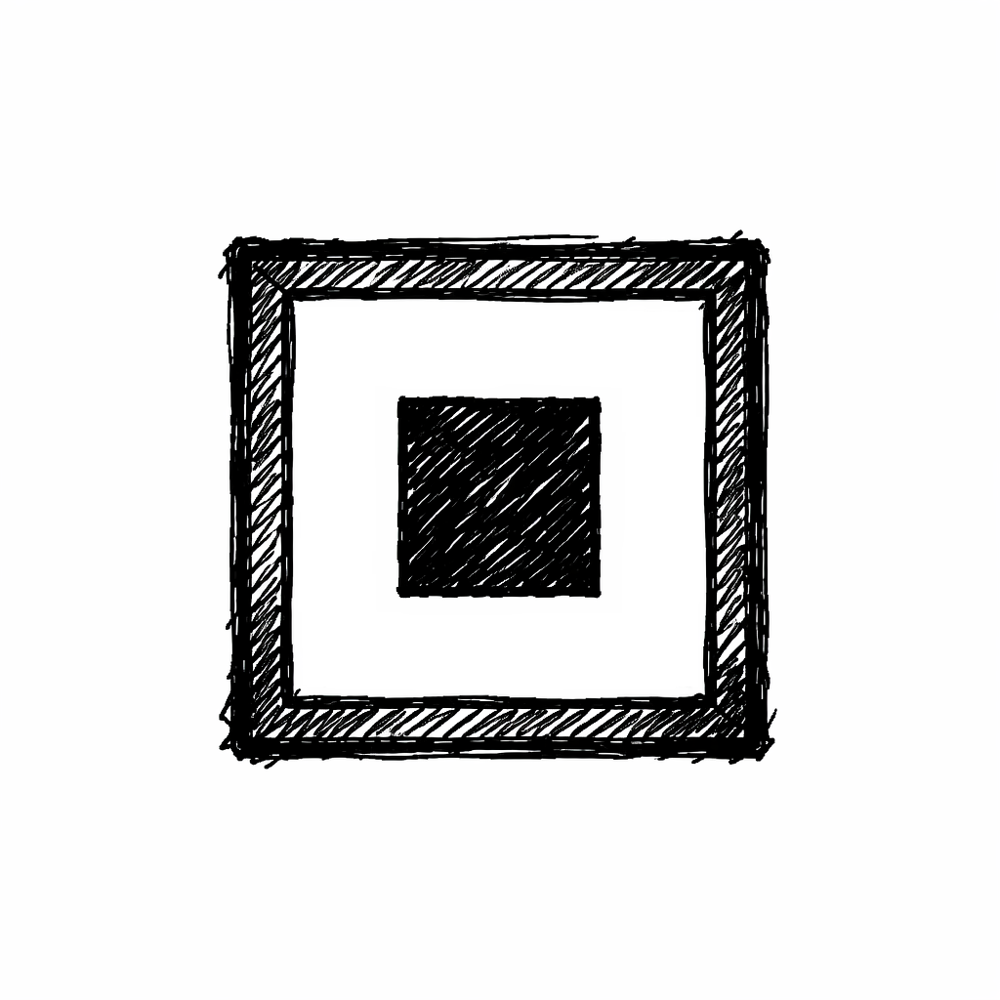

Casita Nodos
Micro-lecturas conectadas.
No para convencerte. Para que veas.
Entra, mira un nodo, sal cuando quieras.
💸 Anti-ceguera económica
Gastos invisibles, fricción y decisiones pequeñas que sí importan.
🧹 Acumulación & descuidos
Objetos, hábitos y cosas que ocupan más de lo que parece.
🧠 Cuerpo y mente
Cansancio, atención y desgaste silencioso.
🧾 Eventos y relatos
Hechos reales, errores, choques y aprendizaje.
🩺 Bitácoras corporales
Herramientas para observar antes de diagnosticar.
🗡️ Archienemigos
Fuerzas internas que bloquean, exageran y drenan.